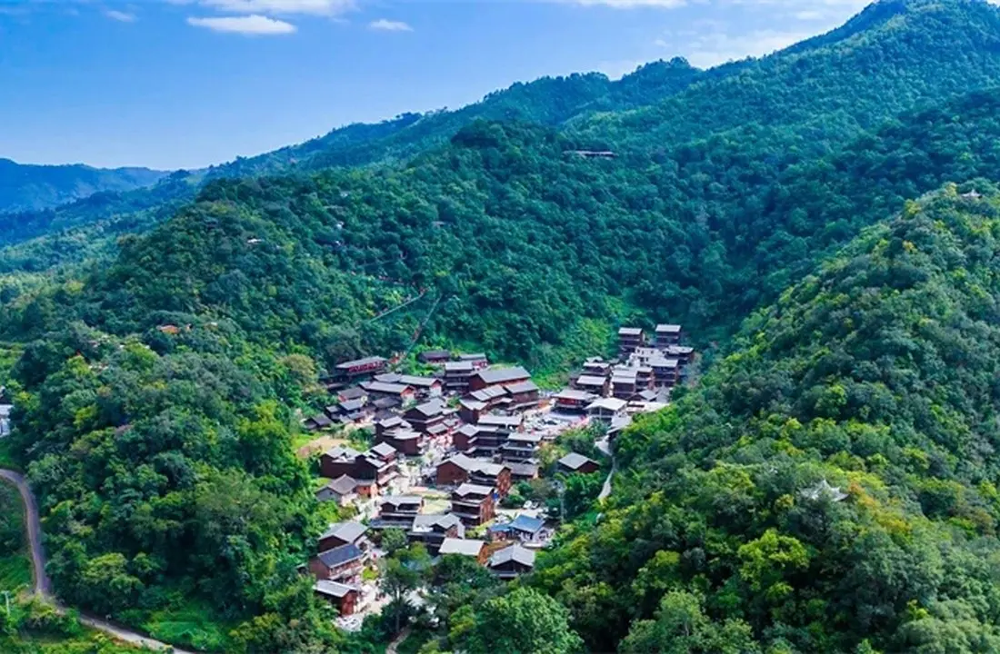
云南同样面对脆弱山地，治理方法并不只有一种
不同地区会根据岩溶石漠化、水土流失、干热河谷或高寒草地等生态条件选择不同组合。
川滇黔 11 地治理与利用路径
云南4 地
以石漠化综合治理、林下经济与农文旅融合为主。
云南
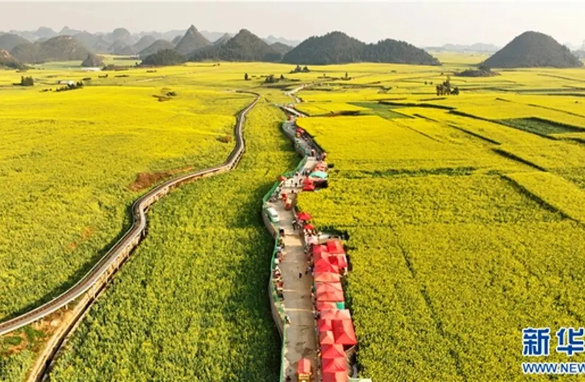
云南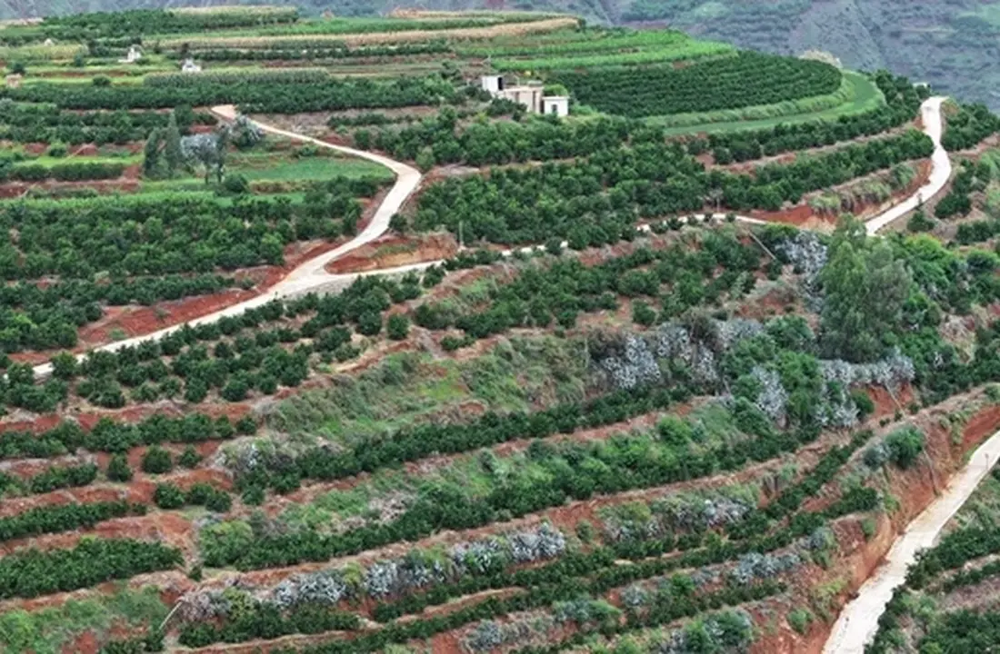
云南贵州3 地
以退耕还林、水土保持和石漠化产业治理为主。
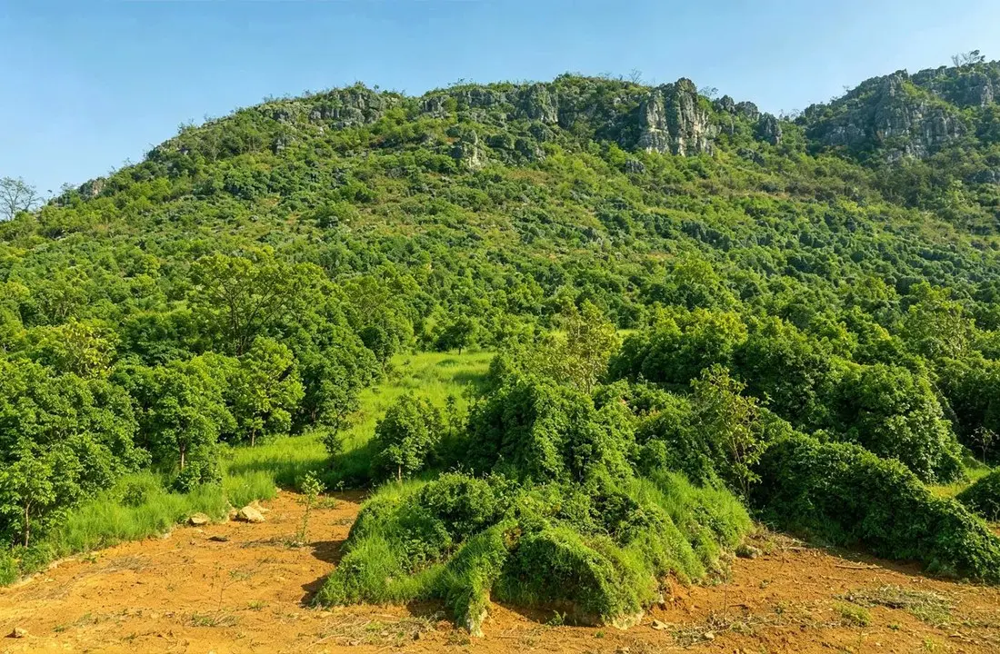
贵州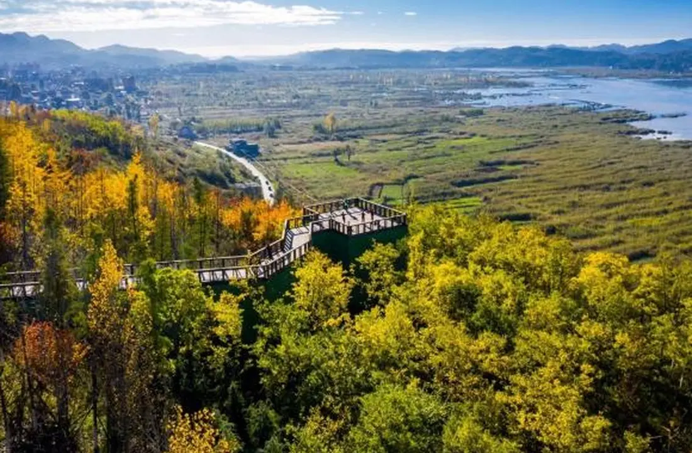
贵州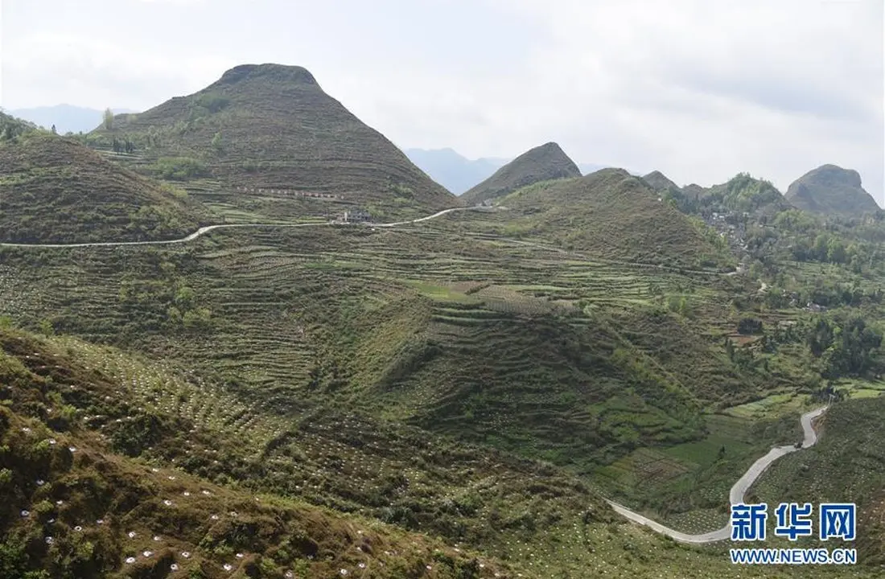
贵州四川4 地
以石漠化、干旱河谷和高寒草地等生态修复为主。
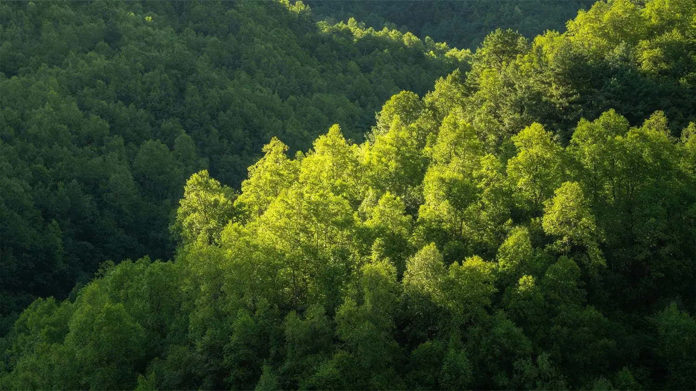
四川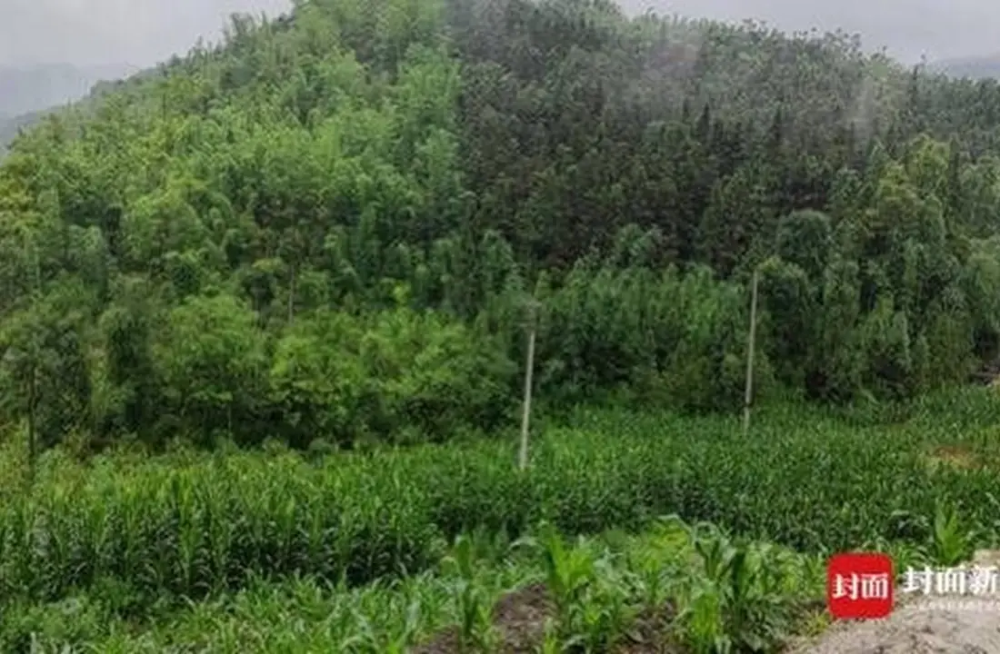
四川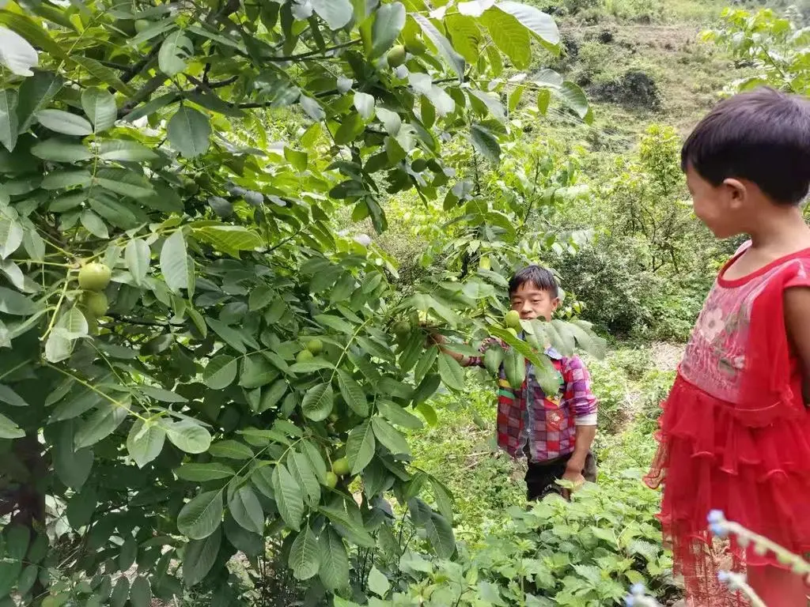
四川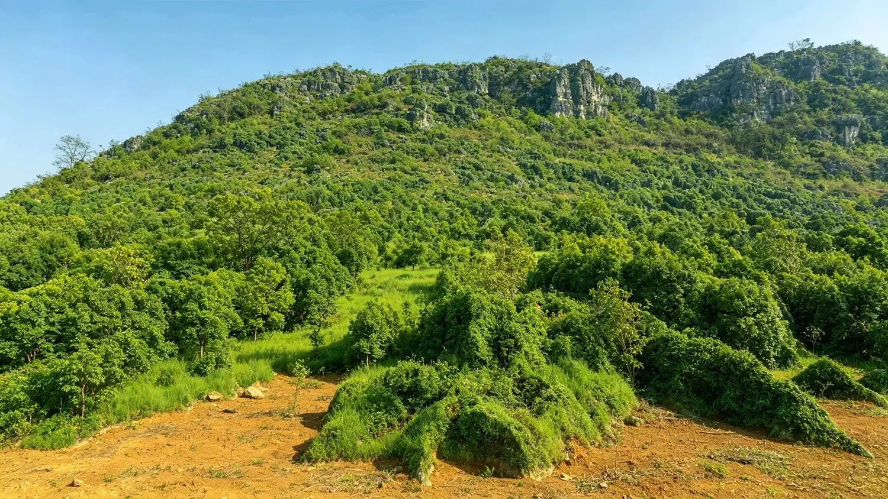
四川三省典型案例深度解读
云南 · 文山州西畴县
西畴：石漠化综合治理的“六子登科”
把山、水、林、田、路和生产生活条件放在一起治理
西畴的关键不是单一造林，而是根据坡位和土地条件组合封山育林、退耕还林、坡改梯、水利和村庄改善等措施，让石漠化地区逐步恢复生态和生产功能。
252.07 km²累计治理石漠化
54.83%森林覆盖率（公开案例）
治理前后景观拖动中线查看
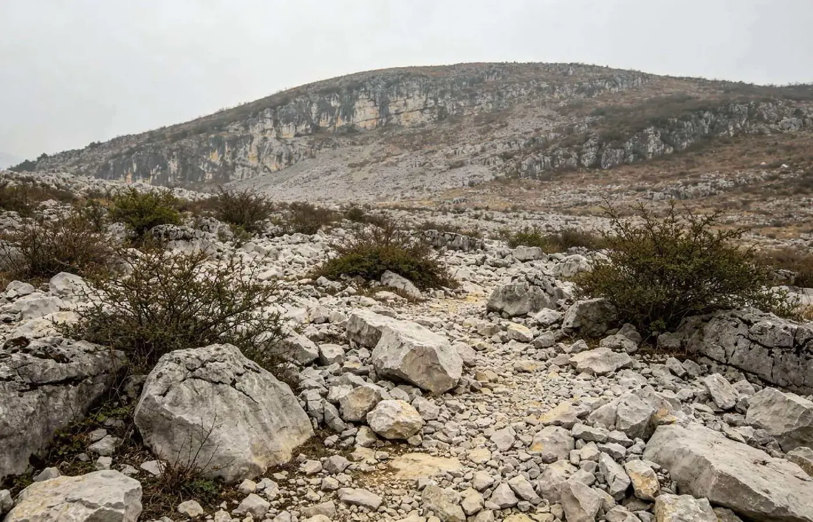
↔
拖动中线观察裸岩地表与植被恢复后的整体景观差异。
治理过程中的关键节点
1990年代初
系统治理启动
提出长期绿化目标，推进山、水、林、田、路综合治理。
2011 起
石漠化工程持续实施
连续多年对多个小流域实施封育、造林、坡改梯和水利设施建设。
2018
三光片区成为示范
作为滇桂黔石漠化片区现场参观点，同年获批国家 4A 级石漠公园项目。
2023
生态价值案例入选
西畴石漠化综合治理入选全国生态产品价值实现典型案例。
相关文章：干！西畴石漠变绿洲
贵州 · 毕节市赫章县海雀村
海雀：先让荒山稳定复绿，再巩固退耕还林成果
三十多年持续造林，是这一案例最清楚的主线
海雀村从 1987 年开始大规模植树造林，之后通过退耕还林、长期护林和生态循环农业巩固成果。这个案例适合用来理解“恢复植被—稳定生态—再利用”的过程。
77.2%森林覆盖率
1.37 万亩全村林地面积
治理前后景观拖动中线查看
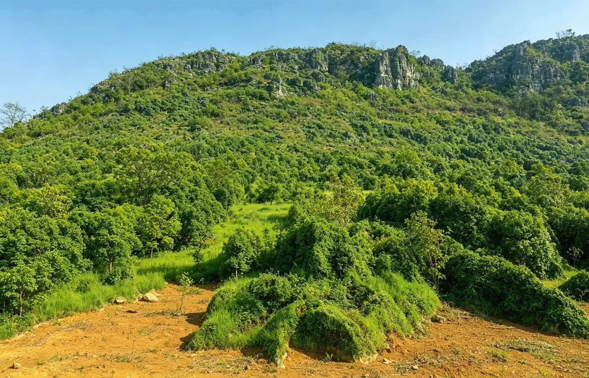
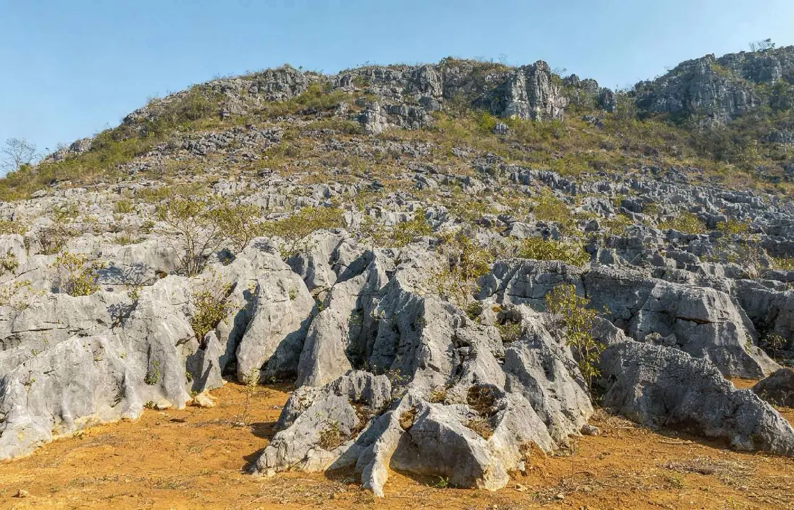
↔
拖动中线观察植被稀少山体逐步形成连续林地的变化。
治理过程中的关键节点
1987
大规模植树造林
海雀开始持续造林，治理“越垦越荒”的生态困境。
2003
第一轮退耕还林
当年完成退耕还林 1120 亩，进一步扩大林地。
2014–2015
新一轮退耕还林
两年继续完成 1085.4 亩和 184.3 亩退耕还林。
2022
林业碳票
在稳定的万亩林海基础上，生态价值开始有新的实现方式。
四川 · 宜宾市长宁县
长宁：生态本底稳定后，竹林如何持续经营
从竹林培育到林下复合利用
长宁依托大面积竹林资源，在稳定森林覆盖的基础上推进竹林培育、林下复合利用和生态监测，形成具有四川山地特色的绿色经营路径。
73 万亩长宁县竹林面积
65.6%森林覆盖率
126 亿元2024 年竹产业产值
竹林生态本底四川宜宾长宁 · 蜀南竹海
120 平方公里竹林形成稳定绿色基底国家林业和草原局《中国绿色时报》报道图
竹林生态经营的关键节点
2018 以来
竹产业转向高质量发展
宜宾持续坚持生态优先、绿色发展，推进现代竹林基地建设。
2021
规模经营政策完善
宜宾出台支持竹产业高质量发展的实施意见，推动竹林科学经营。
2024
林下经济继续扩展
长宁竹产业产值达到 126 亿元，并持续发展竹荪、竹菌、竹药等模式。
2025
“万亩林亿元钱”示范
以双河、龙头等地为重点，建设竹林与林药、林菌复合经营示范。